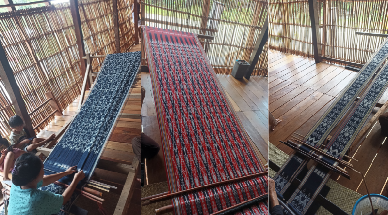

Membangun Fondasi Karakter Guru Informatika
Halo! Saya Yohanes Jelly Sonda, mahasiswa PPG UNY calon guru Informatika. Saat ini saya melaksanakan PPL di SMKN 5 Yogyakarta, berkomitmen penuh untuk memadukan kecakapan digital dengan nilai karakter luhur pendidik.
Mengapa E-Portfolio ini Penting?
E-Portfolio ini dikembangkan sebagai instrumen refleksi awal yang holistik selama pelaksanaan Pendidikan Profesi Guru. Di dalamnya tersaji landasan karakter pendidik, kompilasi perangkat ajar inovatif, evaluasi kritis dari Guru Pamong dan Dosen Pembimbing Lapangan (DPL), serta visi masa depan saya sebagai model guru yang diimpikan.
Lahir di Sintang, Kalimantan Barat
Saya lahir dan dibesarkan di Kabupaten Sintang, Kalimantan Barat. Menjadi putra daerah Sintang membentuk karakter diri saya yang ulet, menghargai keberagaman, dan memiliki kedekatan emosional yang tinggi dengan keunikan alam serta warisan budaya lokal.
3 Keunikan Utama Kabupaten Sintang
1. Saka Tiga Kapuas - Melawi
Pertemuan Sungai Melawi dan Kapuas membentuk pertigaan air (Saka Tiga) sebagai nadi sejarah perdagangan.
2. Bukit Kelam yang Megah
Batu monolit raksasa terbesar kedua di dunia setinggi 1.002 MDPL, menawarkan keindahan alam eksotis.

Warisan Budaya3. Tenun Ikat Dayak Sintang
Kain tenun tradisional premium yang dibuat menggunakan pewarna alami tumbuhan hutan Sintang.
Mengapa Saya Memilih Menjadi Guru?
Mengamati perkembangan pesat teknologi informasi mendorong kuat tekad saya untuk menjadi jembatan ilmu. Saya ingin memastikan bahwa murid generasi masa kini memiliki kecakapan digital (digital literacy) mumpuni yang diimbangi etika moral yang luhur.
Tujuan Profesional Saya: Menjadi guru Informatika yang bukan hanya mengajarkan baris kode pemrograman, melainkan fasilitator berpikir kritis (computational thinking) yang humanis.
"Teknologi hanyalah alat. Namun dalam memotivasi murid dan menginspirasi kolaborasi, gurulah yang paling utama."
— Yohanes Jelly SondaRiwayat Pendidikan Akademik
Universitas Nusa Mandiri Kota Depok
Sarjana Sistem Informasi (S1)
UNIVERSITAS BSI Kota Pontianak
D3 Sistem Informasi
SMK N 1 Sintang
Teknik Komputer dan Jaringan (TKJ)
Peta Titik Lokasi Instansi
Tinjauan spasial LPTK tempat menempuh studi dan sekolah tempat pelaksanaan praktik pengalaman lapangan (PPL).
Analisis Artefak Pembelajaran
Berikut adalah ragam produk rencana dan perangkat pembelajaran yang dikembangkan selama siklus PPL Terbimbing.
Layar Tinjau Berkas
Gunakan panel di bawah ini untuk mengganti berkas yang ingin ditinjau secara langsung pada frame preview.
Instrumen Penilaian PPL Terbimbing
Dokumentasi transparansi nilai evaluasi kompetensi akademik dan kepribadian mengajar yang diberikan oleh Guru Pamong (GP) serta Dosen Pembimbing Lapangan (DPL).
Pilih Berkas Penilaian
Pilih dokumen resmi di bawah ini untuk menampilkan pindaian hasil penilaian asli.
Model Guru Masa Depan
Gagasan ideal mengenai profil, karakter, serta nilai-nilai profesionalisme pendidik.
Tinjau Refleksi Akhir
Laporan Refleksi Akhir Komprehensif memuat seluruh evaluasi, analisis SWOT diri, dan Rencana Tindak Lanjut (RTL).
Analisis SWOT & Rencana Tindak Lanjut
Memiliki kemampuan adaptasi teknologi yang sangat baik, ramah berkomunikasi dengan siswa, serta rajin merancang media ajar kreatif.
Seringkali terlalu detail memikirkan teknis sehingga terkadang perlu meningkatkan manajemen waktu presentasi kelompok.
Dukungan dari komunitas rekan mahasiswa PPG Prajabatan UNY dan bimbingan terbuka guru pamong di SMKN 5 Yogyakarta.
Heterogenitas tingkat pemahaman literasi digital siswa yang beragam membutuhkan waktu asimilasi materi yang adaptif.